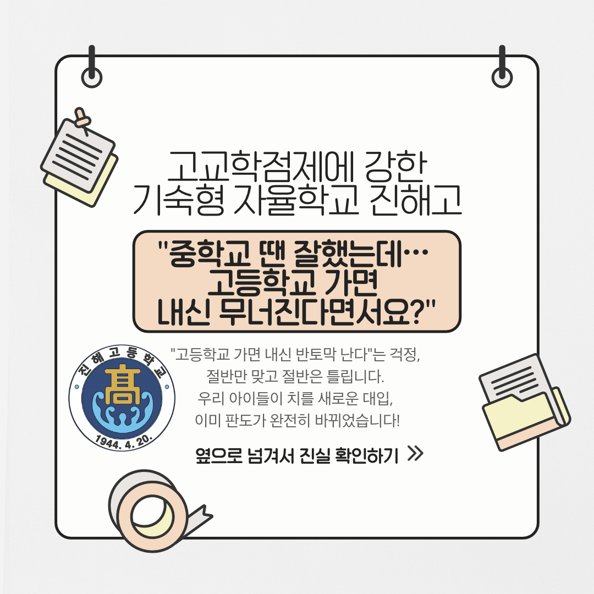

기숙사 입사 자가진단
우리 아이, 기숙사에
들어갈 수 있을까요?
출신 중학교 지역과 중학교 내신 석차백분율만 입력하면, 관내 우선(5%) · 작년 관내 합격선(약 16%) 및 관외 우선(30%) 기준에 비추어 바로 알려 드려요. 입력값은 저장·전송되지 않습니다.
2028 대입 · 고교 내신 5등급제
석차 1등의 무게,
300명과 100명은 다릅니다
5등급제에서는 1등급 상위 10%, 2등급까지 누적 34%입니다. 학년 인원이 많을수록 석차 한 칸이 백분율에 주는 충격이 작고, 등급 경계가 촘촘해져 한 번의 시험 결과에 덜 흔들립니다.
석차 1등 = 백분율
0.33%p
- 1등급 인원
- 30명
- 2등급까지 누적
- 102명
석차 1등 = 백분율
1.00%p
- 1등급 인원
- 10명
- 2등급까지 누적
- 34명
※ 석차 n등 변동 시 석차백분율 변화(n ÷ 학년 인원). 실제 등급은 원점수 분포·동점자 처리 기준에 따라 달라질 수 있습니다.
심화 선택과목, 수요 기반 정규 개설
고급 물리학·고급 화학·고급 생명과학·고급 지구과학, 심화수학Ⅰ·Ⅱ, 인공지능 수학 등 의약학·이공계 진학에 필요한 과목을 학생 수강 수요를 반영해 정규 교육과정에서 개설·운영합니다.
기숙사 라이프
기숙사생의 평일 하루,
매일 몰입 자습 4.5시간+
🎥 진해고등학교 기숙사(동백관 · 송학관) 공식 홍보 영상
화면을 탭하시면 쾌적한 기숙사 시설과 하루 일과 영상을 바로 시청하실 수 있습니다
-
06:30
기상 · 아침 점호 · 조식
-
주간
정규 교과 수업 · 진로 탐구 활동
-
18:30 ~ 21:00 자습 2.5시간
1차 야간 자율학습 (학년 교실)
-
21:00 ~ 21:30
휴식 · 이동 · 전자기기(휴대전화) 사용
-
21:30 ~ 23:30 자습 2시간
2차 심야 자습 (기숙사 개인 지정 정독실)
-
23:30
점호 · 소등 (희망자 연장 자습: 1·2학년 01:00 / 3학년 01:30까지)
진학 성과 · 장학
숫자로 보는 2026학년도 대입
서울대
1명
합격
의약학 계열
4명
의예 3 · 치·한·약 1
사관학교
7명
해사 6 · 육사 1
연세대 · 고려대
5명
연세 2 · 고려 3
※ 2026학년도 대입 결과, 학교 자체 집계 기준(중복 합격 및 재수/N수생 포함). 세부 진학 결과는 아래 공식 발표 자료를 참조하세요.
연간 약 9,000만 원 규모 장학 혜택
총동창회 장학금, 애향삼품 장학금, 창원한마음병원 장학금, 안주환 장학금 등. 입학 장학은 중학교 내신(석차백분율) 기준으로 적용됩니다.
학부모를 위한 핵심 요약 기획안내 (1편 ~ 4편)
입학홍보 카드뉴스 기획 시리즈
진해고의 핵심 강점을 엄선한 카드뉴스 시리즈입니다. 원하시는 편을 선택하여 미리보기를 확인하시고, [카드뉴스 크게 보기]를 누르면 고화질 팝업창에서 모바일 스와이프(좌우 넘김) 또는 화살표로 전편 슬라이드를 넘겨보실 수 있습니다.

2028 대입 개편 5등급제와 300명 대단지 일반고의 압도적 시너지
2028학년도 5등급제 개편 시 1등급 비율이 상위 10%로 확대됩니다. 학생 수가 적은 소규모 학교는 1등급이 10명에 불과해 1명만 밀려도 1.00%p가 흔들리지만, 진해고는 10학급 300명 정원으로 1등급이 무려 30명까지 확보되어 내신 안정성이 3배 이상 뛰어납니다.
1등급 30명 확보: 300명 모수로 1명의 변동 폭이 단 0.33%p에 불과
다양한 선택과목 개설: 학생 수가 많아 소인수 심화 과목도 폐강 없이 안전 개설
수능 최저 충족 최적: 면학 분위기가 잡힌 정독실과 연계하여 수능 최저 충족률 극대화
JINHAE HIGH SCHOOL · CAREER PLANNER
나만의 맞춤형 3개년 교육과정 설계기
진로를 고르면 학년별 추천 과목이 바로 나타납니다. 과목을 교체·추가하고 학점을 조정해 나만의 로드맵을 만들어 보세요.
2027 신입생이 알아둘 교육과정 변화
석차등급 산출 대상 과목은 5등급 체계. 1등급 구간은 4%에서 10%로 확대되며 성취도도 함께 확인합니다.
해당 융합선택 과목은 석차등급 미기재 대상입니다. 모든 융합선택이나 모든 진로선택이 같은 평가 방식인 것은 아닙니다.
제공 자료는 소인수 5명 이상 개설과 공강 0시간 운영 원칙을 안내합니다. 2027 개설·시간표 확정과는 구분해 확인해야 합니다.
📌 2022 개정 교육과정 & 진해고 선택과목 이수 안내
- 과목 구분 체계: 2022 개정 교육과정은 공통과목, 일반선택, 진로선택, 융합선택의 4단계로 운영되며 학생 각자의 희망 계열에 맞춰 자유롭게 선택합니다.
- 수학 로드맵: 공통수학1·2를 바탕으로 2학년에서 대수, 미적분Ⅰ, 확률과 통계를 이수하고, 3학년에서 미적분Ⅱ, 기하, 인공지능 수학 등 심화 과목으로 연계됩니다.
- 과학·사회 탐구 로드맵: 물리학·화학·생명과학·지구과학 기초에서 역학과 에너지, 세포와 물질대사, 물질과 에너지 등 전공 심화 과목으로 폭넓게 연결됩니다.
- 평가 방식: 일반선택 과목은 5등급 상대평가(1등급 10%)가 적용되며, 사회·과학 융합선택 과목은 석차등급 없이 성취도(A~E)만 산출되어 심화 탐구 학습의 내신 부담을 대폭 덜어줍니다.
1. 관심 있는 진로 트랙을 선택하세요
추천안은 탐색의 출발점입니다. 트랙을 변경하면 현재 선택이 해당 추천안으로 바뀝니다.
2. 학년별 과목과 학점을 설계하세요
학점은 3개년 총 192학점 이수 체계(교과 174학점 + 창체 18학점)를 기준으로 산정됩니다. 기본 추천된 과목을 클릭하여 자유롭게 변경하거나 학점을 조율하여 나만의 최적화 로드맵을 설계해 보세요.
3. 실시간 설계 분석
교과 + 창의적 체험활동 · 입력값 합계
초기값 18학점. 실제 학교 편성과 인정 기준을 확인하세요.
아래 점검은 이 도구의 진로 탐색 기준이며, 서울대·주요대의 공식 권장과목 판정이 아닙니다.
📊 진해고 실제 개설 학급 수(반 수) 및 학생 선택 통계
진해고등학교는 10개 학급(약 300명 규모)으로 운영되는 교육과정 특화 거점학교입니다. 학생 5명 이상 희망 시 소인수 과목도 100% 개설하며 공강(빈 시간) 없는 완벽한 학생 맞춤형 시간표를 제공합니다.
| 과목 | 실제 개설 반 수 | 수강 학생 수 |
|---|
- 현재 3학년 주요 개설 반 현황: 물리학Ⅱ(4개 반), 사회문화(4개 반), 생활과윤리(4개 반), 심화수학Ⅰ(4개 반), 미적분(4개 반), 심리학(4개 반), 철학(3개 반), 교육학(2개 반), 경제수학(2개 반), 프로그래밍(1개 반) 등 다채로운 심화 과목 개설.
- 100% 선택권 보장: 진해고는 학생들의 선택 과목을 최대한 보장하여 5명 이상의 소인수 과목도 폐강 없이 전면 개설하고 있습니다.
- 공강 0시간 원칙: 맞춤형 이동수업을 하면서도 학생에게 비어있는 자습/공강 시간 없이 모든 교시가 알찬 정규 수업으로 채워집니다.
- 진해 지역 특화 교육과정: 해군사관학교 지원 학생을 위한 사관학교 전담 면접반 및 공공인재 대비반, 창원·진해 AI/소프트웨어 및 첨단공학 연계 교육과정을 적극 지원합니다.
- 개인정보 안심: 선택 내용은 학생 브라우저에만 저장되며 외부 서버로 전송되지 않습니다.
나의 3개년 설계 요약
24시간 AI 챗봇 누적 데이터 분석
챗봇 실제 빈출 상담 질문 TOP 10
챗봇 첫 화면의 4대 기본 질문(전형일정, 선발기준, 장학금, 입시결과)을 제외하고, 학부모와 중3 학생들이 실제로 챗봇에 가장 많이 질문한 10대 핵심 궁금증의 공식 답변입니다.
진해고등학교
경상남도 창원시 진해구 여좌로 100
교무실(입학 상담) 055-546-2260 · 행정실 055-546-2361
본 페이지는 2027학년도 신입생 입학전형 안내 기준이며, 세부 사항은 학교 누리집 공지가 우선합니다.
System Architecture & Framework Copyright ⓒ 2026-2027 2026학년도 입학업무담당자. All Rights Reserved.
본 입학홍보 시스템의 UI/UX 디자인, 기숙사 입사 자가진단 계산 알고리즘, 반응형 웹 아키텍처 및 소스 코드의 지식재산권은 2026학년도 입학업무담당자에게 독점 귀속됩니다.
저작권자의 사전 서면 허가 없는 타 학교·사설 업체의 프레임워크 무단 복제, 템플릿 도용, 소스 재배포를 일절 금합니다. (입학 공시 정보 및 학교 데이터 ⓒ 진해고등학교)